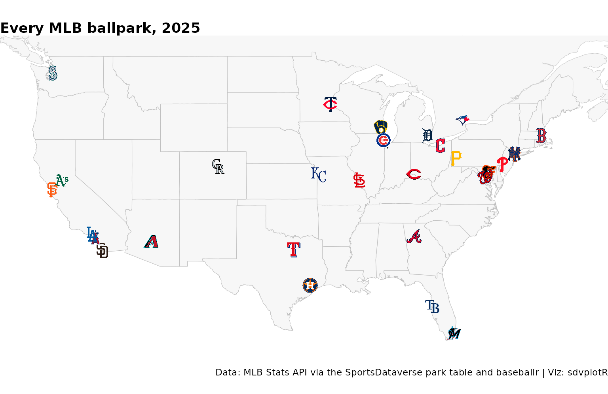

Team maps with leaflet
Saiem Gilani


Source: vignettes/cookbook-leaflet-maps.Rmd
cookbook-leaflet-maps.RmdOn this page
leaflet draws
pannable, zoomable web maps, and sdvplotR’s
addSdvLogoMarkers() makes each marker a team logo. The interactive cookbook puts three NFL
stadiums on a map and the CFB
stadium map every FBS program; the maps here add popups with park
data, layer switches, circles sized by a stat, and clustered markers for
teams that share a park.
Every coordinate comes from published data, never typed in: the MLB
ballparks from the SportsDataverse park table (built from the MLB Stats
API’s venues endpoint), and the Big Ten stadiums from
CollegeFootballData.com through cfbfastR. The basemaps are Esri’s light
gray canvas and OpenStreetMap, which need no key.
library(sdvplotR)
library(dplyr, warn.conflicts = FALSE)
library(leaflet)
library(ggplot2)
season <- 2025
esc <- htmltools::htmlEscape # popup text is HTML: escape names before pasting them in1. MLB: every ballpark, with its dimensions in the popup
The park table is one row per venue per season, with the capacity,
fence distances, roof, elevation and coordinates as of that season. It
is a release file on the SportsDataverse data repository
(baseballr::load_mlb_park_dimensions() in the development
version of baseballr reads the same file). mlb_teams()
names each club’s home venue_id, so the join needs no name
matching. The park table stores the id as text and
mlb_teams() as a number, so both become text first.
parks <- read.csv(
"https://github.com/sportsdataverse/sportsdataverse-data/releases/download/mlb_parks/mlb_park_dimensions.csv",
colClasses = c(venue_id = "character")
) |>
filter(season == !!season)
clubs <- baseballr::mlb_teams(season = season, sport_ids = 1) |>
transmute(
team_id, team = team_abbreviation, name = team_full_name,
division = sub("^American League", "AL", sub("^National League", "NL", division_name)),
venue_id = as.character(venue_id),
spring_venue_id = as.character(spring_venue_id), spring_league = spring_league_name
)
stopifnot(identical(class(clubs$venue_id), class(parks$venue_id)))
ballparks <- inner_join(clubs, select(parks, -season), by = "venue_id") |>
mutate(popup = sprintf(
"<b>%s</b><br>%s<br>Capacity %s<br>Center field %s ft<br>%s roof, %s ft above sea level",
esc(name), esc(venue_name), format(capacity, big.mark = ","), center_ft, roof_type,
format(elevation_ft, big.mark = ",")
))
stopifnot(nrow(ballparks) == 30, !anyNA(ballparks$latitude))addSdvLogoMarkers() reads the coordinates and team keys
from the map’s data with formulas; label is the hover text
and popup opens on a click.
leaflet(ballparks) |>
addProviderTiles(providers$Esri.WorldGrayCanvas) |>
addSdvLogoMarkers(~longitude, ~latitude, ~team, league = "mlb", size = 30, label = ~name, popup = ~popup)Click Coors Field: 415 feet to center and more than a mile above sea level.
2. MLB: one layer per division
A leaflet group names a set of layers, and
addLayersControl() gives each group a checkbox. One
addSdvLogoMarkers() call per division, each with its
division’s rows passed as data, makes six groups the reader
can switch on and off, so the AL East’s five parks can be seen apart
from the NL East’s, which share the same stretch of coast.
divisions <- sort(unique(ballparks$division))
division_map <- leaflet() |>
addProviderTiles(providers$Esri.WorldGrayCanvas)
for (d in divisions) {
division_map <- division_map |>
addSdvLogoMarkers(
~longitude, ~latitude, ~team,
league = "mlb", size = 30, label = ~name, popup = ~popup, group = d,
data = filter(ballparks, division == d)
)
}
division_map |>
addLayersControl(overlayGroups = divisions, options = layersControlOptions(collapsed = FALSE)) |>
hideGroup(setdiff(divisions, c("AL East", "NL East")))hideGroup() starts the map with two divisions shown;
tick the others to add them.
3. MLB: team-colored circles sized by wins
A logo shows where a team plays; a circle can show how it did.
addCircleMarkers() draws one circle per row, and its
radius (in pixels) and fillColor take a vector
one per row. sdv_team_colors() colors each circle with the
team’s primary color, and the radius grows with the team’s wins, from
baseballr::mlb_standings(). The logos go on top, smaller,
so each circle still says whose it is.
wins <- baseballr::mlb_standings(season = season, league_id = "103,104") |>
transmute(team_id = team_records_team_id, w = team_records_wins, l = team_records_losses)
stopifnot(identical(class(wins$team_id), class(ballparks$team_id)))
ballparks <- inner_join(ballparks, wins, by = "team_id") |>
mutate(
color = sdv_team_colors("mlb", team),
radius = 6 + 30 * (w - min(w)) / (max(w) - min(w)), # 6 px for the fewest wins, 36 for the most
record = sprintf("%s: %d-%d", name, w, l)
)
leaflet(ballparks) |>
addProviderTiles(providers$Esri.WorldGrayCanvas) |>
addCircleMarkers(
~longitude, ~latitude,
radius = ~radius, fillColor = ~color, fillOpacity = 0.45,
color = ~color, weight = 2, opacity = 0.9, label = ~record
) |>
addSdvLogoMarkers(~longitude, ~latitude, ~team, league = "mlb", size = 18, label = ~record)The circle’s radius is the stat, so compare areas with care: a circle twice as wide covers four times the area. For a strict comparison, scale the radius by the square root of the stat.
4. MLB: spring training, with shared parks clustered
In spring, 30 teams play in 23 parks: 15 in Arizona’s Cactus League
and 15 in Florida’s Grapefruit League, and some pairs share a park, so
their logos would sit on the same point.
clusterOptions = markerClusterOptions() passes through
addSdvLogoMarkers() to leaflet’s marker clustering: nearby
markers fold into a numbered bubble, and clicking a bubble on a shared
park fans its logos out. Each league is a group.
spring_parks <- select(parks, spring_venue_id = venue_id, venue_name, lat = latitude, lon = longitude)
spring <- clubs |>
inner_join(spring_parks, by = "spring_venue_id") |>
mutate(label = paste0(name, ": ", venue_name))
stopifnot(nrow(spring) == 30)
spring_map <- leaflet() |>
addTiles()
for (lg in unique(spring$spring_league)) {
spring_map <- spring_map |>
addSdvLogoMarkers(
~lon, ~lat, ~team,
league = "mlb", size = 30, label = ~label, group = lg,
clusterOptions = markerClusterOptions(maxClusterRadius = 30),
data = filter(spring, spring_league == lg)
)
}
spring_map |>
addLayersControl(overlayGroups = unique(spring$spring_league), options = layersControlOptions(collapsed = FALSE))Zoom into Phoenix or the Gulf Coast to break the clusters apart.
5. College football: the Big Ten, coast to coast
Since 2024 the Big Ten has run from Los Angeles to New Jersey.
cfbd_team_info() gives each FBS school’s conference and
home stadium coordinates, and its team_id is ESPN’s id,
which sdvplotR keys college logos by. The wins come from ESPN’s
schedules in cfbfastR’s release files (no key), counted over the regular
season and the postseason. Circles sized by wins and colored by team, as
in recipe 3, sit under the logos.
CollegeFootballData.com needs a free API key in
CFBD_API_KEY (get one at https://collegefootballdata.com/key; see
?cfbfastR::register_cfbd). Without one, this section’s code
is shown but not run.
has_key <- nzchar(Sys.getenv("CFBD_API_KEY"))
b1g <- cfbfastR::cfbd_team_info(only_fbs = TRUE, year = season) |>
as.data.frame() |>
filter(conference == "Big Ten") |>
transmute(team_id = as.character(team_id), school, venue = venue_name, capacity, lon = longitude, lat = latitude)
games <- cfbfastR::load_espn_cfb_schedules(season) |>
filter(!is.na(home_score), !is.na(away_score))
records <- bind_rows(
transmute(games, team_id = as.character(home_id), won = home_score > away_score),
transmute(games, team_id = as.character(away_id), won = away_score > home_score)
) |>
group_by(team_id) |>
summarise(w = sum(won), l = sum(!won), .groups = "drop")
stopifnot(identical(class(b1g$team_id), class(records$team_id)))
b1g <- inner_join(b1g, records, by = "team_id") |>
mutate(
color = sdv_team_colors("cfb", team_id),
radius = 6 + 2.2 * w,
popup = sprintf(
"<b>%s</b> (%d-%d)<br>%s<br>Capacity %s",
esc(school), w, l, esc(venue), format(capacity, big.mark = ",")
)
)
stopifnot(nrow(b1g) == 18)
leaflet(b1g) |>
addProviderTiles(providers$Esri.WorldGrayCanvas) |>
addCircleMarkers(
~lon, ~lat,
radius = ~radius, fillColor = ~color, fillOpacity = 0.4, color = ~color, weight = 2,
popup = ~popup
) |>
addSdvLogoMarkers(~lon, ~lat, ~team_id, league = "cfb", size = 24, label = ~school, popup = ~popup)6. The static version
A leaflet map is HTML. For a print page or a post, draw the logos
with ggplot2 at their longitude and latitude over the state outlines
from map_data("state") (it needs the maps package), with
Canada’s outline for Toronto. coord_quickmap() keeps the
map’s proportions.
states <- map_data("state")
canada <- map_data("world", region = "Canada")
ggplot() +
geom_polygon(data = canada, aes(long, lat, group = group), fill = "grey97", colour = "grey80", linewidth = 0.2) +
geom_polygon(data = states, aes(long, lat, group = group), fill = "grey97", colour = "grey75", linewidth = 0.2) +
geom_sdv_logos(data = ballparks, aes(x = longitude, y = latitude, team = team), league = "mlb", height = 0.05) +
coord_quickmap(xlim = c(-125, -67), ylim = c(24.5, 49.5)) +
labs(
title = paste("Every MLB ballpark,", season),
caption = "Data: MLB Stats API via the SportsDataverse park table and baseballr | Viz: sdvplotR"
) +
theme_void() +
theme(plot.title = element_text(face = "bold"))
Related
- Interactive charts: ggiraph, plotly, leaflet and reactable with sdvplotR.
- CFB Stadium Map: every FBS program on one map, with a layer per conference and an HTML export.
- Baseball: baseballr and sdvplotR charts and tables.
- Reference: addSdvLogoMarkers(), sdv_team_colors(), geom_sdv_logos().
Related SportsDataverse packages
- sdvplot - the Python plotting package
- sdvplot-js - the JavaScript / TypeScript plotting packages
- cfbfastR - college football
- hoopR - men’s basketball
- wehoop - women’s basketball
- baseballr - baseball
- fastRhockey - hockey
- oddsapiR - betting odds
- sportyR - playing surfaces
- sportsdataverse-py - the Python package
- sportsdataverse-R - the R meta-package